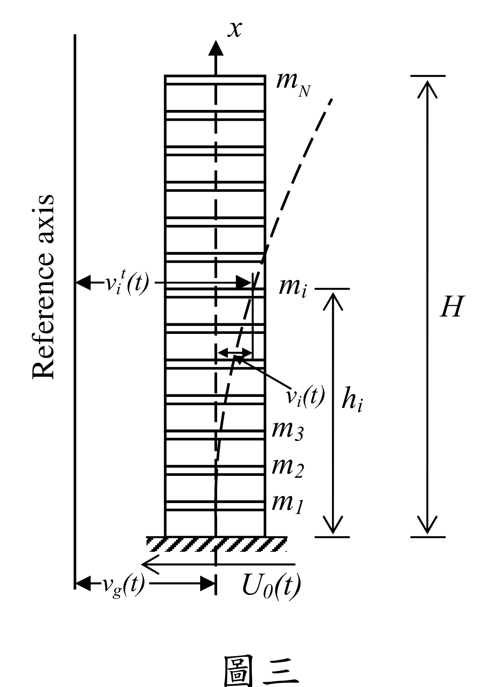
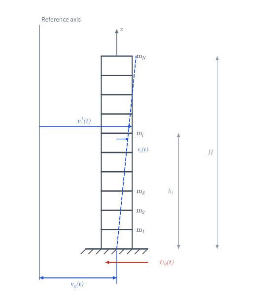

📄 題目正本：考卷原文・附圖・判讀清單（已確認）
SD-2015-3 題目正本
本檔只記錄考卷上寫了什麼、圖上畫了什麼，不含任何解法。解析見同資料夾
SD-2015-3.md。
判讀清單經使用者確認前，狀態為「待確認」；確認後本檔原則上不再修改（改動須回考卷原圖並記 log）。
| 項目 | 內容 |
|---|---|
| 考卷 | raw/exams/SD-2015_結構動力分析與耐震設計.pdf，第 2 頁（背面），第三題 |
| 考年 | 2015（民國104年）專技高考結構工程技師「結構動力分析與耐震設計」 |
| 配分 | 25 分（15／10） |
| 附圖 | SD-2015-3-fig-1.png（舊擷取，左下有游標）、SD-2015-3-fig-2.png（2026-11-15 由考卷 500 dpi 重擷取） |
| 判讀狀態 | 已確認（2026-11-15 使用者授權依 Claude 建議確認。原轉錄：2026-11-15 轉錄；PyMuPDF 110 dpi 整頁＋400–500 dpi 局部放大，PDF 文字層核對原文；盲讀於開啟解析前完成） |
1. 考卷原文（逐字）
三、構架（Frame）如圖三，有 N 個自由度，且質量集中在樓層上。若分析時，只考慮第一振態（1st Mode）$\phi_1$
㈠證明此構架之基底剪力（Base Shear）$U_0(t)=\dfrac{L_1^2}{M_1}\omega_1V_1(t)$ 式中
$V_1(t)=-\int_0^t\ddot v_g(\tau)e^{-\xi_1\omega_1(t-\tau)}\sin\omega_1(t-\tau)d\tau$，$M_1=\phi_1^Tm\phi_1$，$L_1=\phi_1^Tm\{1\}$，m 為 N×N 質量矩陣，$\{1\}^T=[1,1,\ldots\ldots,1]$ 為 N×1 向量，$\omega_1$、$\xi_1$ 分別為第一模態之頻率及阻尼比（Damping ratio）。並假設 $\xi_1$ 很小。（15 分）
㈡令 $\phi_1^T=\left[\dfrac{h_1}{H},\ \ldots\ldots,\ \dfrac{h_i}{H},\ \ldots\ldots,\ \dfrac{h_n}{H}\right]$，證明最大基底剪力 $|U_0(t)|_{\max}$ 之豎向分配至各樓層之水平力 $f_{si}=\dfrac{m_ih_i}{\sum_{j=1}^{N}m_jh_j}|U_0(t)|_{\max}$（10 分）
2. 考卷給的公式、附表與參數
- 考卷給：$U_0(t)=\dfrac{L_1^2}{M_1}\omega_1V_1(t)$、$V_1(t)$ 的 Duhamel 積分式、$M_1$、$L_1$ 定義、$\phi_1^T=[h_1/H,\ldots,h_i/H,\ldots,h_n/H]$、$f_{si}$ 待證式。
- 考卷沒有給：任何數值（全為證明）。
- 卷首注意事項：㈠可以使用電子計算器。㈡不必抄題，作答時請將試題題號及答案依照順序寫在試卷上，於本試題上作答者，不予計分。考試時間：2 小時。
3. 附圖

證據圖 SD-2015-3-fig-2.png（500 dpi 重擷取；舊圖 SD-2015-3-fig-1.png 內容相同，左下有游標）
圖面文字照錄：x、$m_N$、Reference axis、$v_i^t(t)$、$m_i$、$v_i(t)$、$h_i$、$m_3$、$m_2$、$m_1$、H、$v_g(t)$、$U_0(t)$、圖三
4. 判讀清單
| # | 項目 | 判讀 | 圖上／題文依據 | 把握 |
|---|---|---|---|---|
| 1 | $V_1(t)$ 的物理意義 | 考卷定義 $V_1(t)=-\int_0^t\ddot v_g e^{-\xi\omega(t-\tau)}\sin\omega(t-\tau)d\tau$，即第一振態廣義座標乘 $\omega_1$ 的量（擬速度型 Duhamel 積分）；待證式 $U_0=\frac{L_1^2}{M_1}\omega_1V_1$ 照錄 | 題文 | 確定 |
| 2 | ㈡下標 | 振態向量最後一項寫 $h_n/H$（小寫 n），與總數 N 不同寫法，照考卷原文；視為 $h_N/H$ | 題文 | 確定（解讀） |
| 3 | $h_i$、$H$ | $h_i$ 由地面量到第 $i$ 層，$H$ 由地面量到頂層 | 圖上尺寸線端點 | 確定 |
| 4 | 位移記號 | $v_i$ 為相對地面位移、$v_i^t=v_i+v_g$ 為總位移（相對 Reference axis） | 圖上箭頭與標註 | 確定 |
| 5 | 底部 | 固定；$U_0(t)$ 為基底剪力 | 圖面＋題文 | 確定 |
| 6 | 阻尼 | 第一振態阻尼比 $\xi_1$ 很小（可用 $\omega_D\approx\omega_1$） | 題文「假設 ξ1 很小」 | 確定 |
| 7 | 所求 | ㈠證明 $U_0(t)$ 式 ㈡證明 $f_{si}$ 豎向分配式 | 題文 | 確定 |
轉錄：2026-11-15（SD-U1-3 題目正本推廣・批 2）
確認：2026-11-15 使用者授權依 Claude 建議確認（SD-U1-3 題目正本推廣・批 2，關卡一）
修訂：2026-11-15 §3 圖說更正——v_g(t) 為參考軸至構架中心線的雙箭頭尺寸、向左單箭頭屬 U0(t)（盲解 G3 指出，考卷第 2 頁圖三底部 600 dpi 複核；判讀清單 #4 不變，不影響答案）
考題編號：SD-2015-3
主分類： SD-U1-3 單自由度、多自由度系統之動態分析及應用
副分類： SD-U2-2 建築耐震設計規範
分析方法： MDOF模態疊加法（第一模態基底剪力推導 + 倒三角豎向分配）
標籤： MDOF 模態疊加法 基底剪力 模態參與因子 模態質量 Duhamel積分 豎向分配 倒三角分布 地震力 推導證明
1. 題目（考卷原文見題目正本）
考卷原文、公式／附表、附圖與判讀清單（已確認）見
SD-2015-3-problem.md。本節只列解題時最容易讀錯的地方與本解使用的記號；題意以題目正本為準。

重繪自考卷附圖，依題目正本判讀清單；本圖攔下的判讀錯誤：h_i、H 由地面量起；v_i 是相對位移。
常見誤讀
| 項目 | 正確判讀 | 常見誤讀 |
|---|---|---|
| $V_1(t)$ | 考卷定義的 Duhamel 積分，$q_1=\frac{L_1}{M_1}\cdot\frac{V_1}{\omega_1}$ 型式（判讀 #1） | 與 $q_1$ 混為一談 |
| ㈡下標 | 振態最後一項寫 $h_n/H$，照考卷原文，視為 $h_N/H$（判讀 #2） | — |
| $h_i$、$H$ | 由地面量起（判讀 #3） | — |
| 阻尼 | $\xi_1$ 很小，$\omega_{d1}\approx\omega_1$ | — |
本解記號： $q_1(t)$ 第一振態廣義座標；$\phi_{1i}=h_i/H$；$U_0(t)$ 基底剪力。
2. 考題核心精神與出題者意圖 (Core Concepts & Examiner's Intent)
核心觀念：
- 理解模態疊加法如何從多自由度方程式解耦為單自由度模態方程式
- 理解基底剪力如何由彈性恢復力與慣性力的等價性推導
- 理解「倒三角形分布」地震力（等效靜力法）的理論根源
出題者意圖：
- 測驗考生能否從 MDOF 運動方程式嚴格推導出基底剪力公式
- 測驗考生是否理解 $V_1(t)$ 是「Duhamel 積分」的核心，即偽速度反應
- 驗證考生能否將振態形狀假設（線性倒三角）代入，得到規範常用的高度比例分配
關鍵陷阱：
- 忘記基底剪力等於「彈性恢復力」而非直接對絕對加速度積分
- Duhamel 積分中阻尼自然頻率 $\omega_{d1} = \omega_1\sqrt{1-\xi_1^2} \approx \omega_1$（需明確說明 $\xi_1$ 很小才可近似）
- 題(二)中分子分母的 $H$ 及 $\omega_1^2,\,|q_1|_\text{max}$ 必須在化簡時同步消去
3. 解題戰略地圖與陷阱分析 (Strategic Roadmap & Trap Analysis)
題(一) 作戰計畫：
- 寫出 MDOF 相對位移運動方程式（地盤激振形式）
- 對第一模態解耦 → 第一模態 SDOF 方程式
- Duhamel 積分求 $q_1(t)$（利用 $\xi_1$ 小做近似）
- 由彈性恢復力 $[k]\{\phi_1\}q_1 = \omega_1^2[m]\{\phi_1\}q_1$（特徵值關係）得樓層力
- 加總樓層力 = 基底剪力；代入 $q_1(t)$ 完成推導
題(二) 作戰計畫：
- 寫出各樓層彈性力 $f_{si}(t) = \omega_1^2 m_i \phi_{1i} q_1(t)$
- 代入線性振態 $\phi_{1i} = h_i/H$
- 寫出 $f_{si}$ 與 $U_0(t)$ 的比值 → 係數為 $m_i h_i / \sum m_j h_j$
- 取最大值得到豎向分配公式
關鍵陷阱：
| # | 陷阱 | 應對 |
|---|---|---|
| 1 | Duhamel 積分符號方向 | $V_1(t)$ 定義中已含負號，代入時方向需一致 |
| 2 | $\omega_{d1} \approx \omega_1$ 近似 | 需先說明「$\xi_1$ 很小故 $\omega_{d1} \approx \omega_1$」再使用 |
| 3 | 特徵值關係 $[k]\{\phi_1\} = \omega_1^2[m]\{\phi_1\}$ | 必須明確引用，不可跳過 |
| 4 | 題(二)最大值同步性 | $f_{si}$ 與 $U_0$ 同一時刻達最大（均乘以 $q_1(t)$），可直接取比值 |
3.5 變數層次分析 (Variable Hierarchy Analysis)
複習提示：第一次解題後，在每個卡住的知識點旁標記
⚠；第二次複習時只看有⚠的項目。
最終目標
題(一)： 推導 $U_0(t) = \frac{L_1^2}{M_1}\omega_1 V_1(t)$；題(二)： 推導 $f_{si} = \frac{m_i h_i}{\sum m_j h_j}|U_0|_\text{max}$
本題關鍵公式（依計算順序）
$$\text{Step 1:}\quad [m]\{\ddot{x}\} + [c]\{\dot{x}\} + [k]\{x\} = -[m]\{1\}\ddot{v}_g(t)$$
$$\text{Step 2:}\quad M_1\ddot{q}_1 + 2\xi_1\omega_1 M_1\dot{q}_1 + \omega_1^2 M_1 q_1 = -L_1\ddot{v}_g(t)$$
$$\text{Step 3:}\quad q_1(t) = -\frac{L_1}{M_1\omega_{d1}}\int_0^t \ddot{v}_g(\tau)\,e^{-\xi_1\omega_1(t-\tau)}\sin\omega_{d1}(t-\tau)\,d\tau \xrightarrow{\xi_1\ll 1} \frac{L_1}{M_1\omega_1}V_1(t)$$
$$\text{Step 4:}\quad [k]\{\phi_1\} = \omega_1^2[m]\{\phi_1\} \quad\text{（特徵值關係）}$$
$$\text{Step 5:}\quad U_0(t) = \{1\}^T[k]\{\phi_1\}q_1(t) = \omega_1^2\,L_1\,q_1(t)$$
$$\text{Step 6:}\quad U_0(t) = \omega_1^2\,L_1\cdot\frac{\boxed{L_1}}{\boxed{M_1}\boxed{\omega_1}}\boxed{V_1(t)} = \frac{L_1^2}{M_1}\omega_1 V_1(t)$$
$$\text{Step 7:}\quad f_{si}(t) = \omega_1^2 m_i\phi_{1i}\,q_1(t) = \frac{m_i h_i}{H}\cdot\omega_1^2\,\boxed{q_1(t)}$$
$$\text{Step 8:}\quad \frac{f_{si}}{U_0} = \frac{m_i h_i/H}{\sum_j m_j h_j/H} = \frac{m_i h_i}{\sum_j m_j h_j}$$
L1：題目直接給定
| 符號 | 數值/定義 | 說明 |
|---|---|---|
| $m$ | $N\times N$ 矩陣 | 質量矩陣 |
| $\phi_1$ | $N\times 1$ 向量 | 第一振態向量 |
| $\omega_1,\xi_1$ | — | 第一模態頻率與阻尼比 |
| $\ddot{v}_g(t)$ | — | 地盤加速度時程 |
| $\phi_{1i} = h_i/H$ | 線性假設 | 題(二)給定的振態形狀 |
L2：需知識點推導
模態解耦
| 符號 | 公式／來源 | 卡關? |
|---|---|---|
| $M_1$ | $\phi_1^T m\phi_1$（廣義質量） | |
| $L_1$ | $\phi_1^T m\{1\}$（模態激發係數） | |
| 模態 SDOF 方程 | 對 MDOF 方程式左乘 $\phi_1^T$ 並利用正交性 |
Duhamel 積分
| 符號 | 公式／來源 | 卡關? |
|---|---|---|
| $q_1(t)$ | $-\frac{L_1}{M_1\omega_{d1}}\int_0^t\ddot{v}_g(\tau)e^{-\xi_1\omega_1(t-\tau)}\sin\omega_{d1}(t-\tau)d\tau$ | |
| $\omega_{d1}\approx\omega_1$ | $\xi_1$ 很小故 $\sqrt{1-\xi_1^2}\approx 1$ |
基底剪力
| 符號 | 公式／來源 | 卡關? |
|---|---|---|
| $U_0(t)$ | $\{1\}^T[k]\{x\} = \{1\}^T\omega_1^2[m]\{\phi_1\}q_1 = \omega_1^2 L_1 q_1$ |
L3：深層知識（不懂就卡住）
| 知識點 | 說明 | 卡關? |
|---|---|---|
| 模態正交性 | $\phi_i^T[m]\phi_j=0,\;\phi_i^T[k]\phi_j=0\;(i\neq j)$，才能解耦 | |
| 特徵值關係 | $[k]\{\phi_1\}=\omega_1^2[m]\{\phi_1\}$，將剛度力轉化為慣性力型式的核心 | |
| 基底剪力等於彈性恢復力之和 | $U_0 = \{1\}^T[k]\{x\}$，不是 $\sum m_i\ddot{x}_{i,\text{abs}}$ 的直接使用 | |
| $V_1(t)$ 物理意義 | 等效 SDOF 在地震下的 Duhamel 積分，即「偽速度」的積分核心 |
4. 步驟化詳細計算過程 (Step-by-Step Detailed Calculation)
題(一)（15分）：證明 $U_0(t) = \dfrac{L_1^2}{M_1}\omega_1 V_1(t)$
Step 1：MDOF 相對運動方程式
以地盤加速度 $\ddot{v}_g(t)$ 激振，令 $\{x\}$ 為各樓層相對於地盤之位移：
$$[m]\{\ddot{x}\} + [c]\{\dot{x}\} + [k]\{x\} = -[m]\{1\}\ddot{v}_g(t) \tag{1}$$
策略註解： 右端 $-[m]\{1\}\ddot{v}_g(t)$ 是地盤加速度施加於各樓層的等效慣性力；全一向量 $\{1\}$ 表示地盤水平運動對各層的影響係數均為 1。
Step 2：模態座標變換與解耦
令 $\{x\}=[\Phi]\{q\}\approx\{\phi_1\}q_1(t)$（只取第一模態）。
對 (1) 式左乘 $\phi_1^T$，利用模態正交性：
$$\phi_1^T[m]\phi_1\,\ddot{q}_1 + \phi_1^T[c]\phi_1\,\dot{q}_1 + \phi_1^T[k]\phi_1\,q_1 = -\phi_1^T[m]\{1\}\ddot{v}_g$$
定義：
$$M_1 = \phi_1^T[m]\phi_1,\quad C_1 = 2\xi_1\omega_1 M_1,\quad K_1 = \omega_1^2 M_1,\quad L_1 = \phi_1^T[m]\{1\}$$
得到第一模態 SDOF 方程：
$$\boxed{M_1\ddot{q}_1 + 2\xi_1\omega_1 M_1\dot{q}_1 + \omega_1^2 M_1 q_1 = -L_1\ddot{v}_g(t)} \tag{2}$$
Step 3：Duhamel 積分求 $q_1(t)$
(2) 式除以 $M_1$：
$$\ddot{q}_1 + 2\xi_1\omega_1\dot{q}_1 + \omega_1^2 q_1 = -\frac{L_1}{M_1}\ddot{v}_g(t)$$
零初始條件下 Duhamel 積分：
$$q_1(t) = -\frac{L_1}{M_1\omega_{d1}}\int_0^t \ddot{v}_g(\tau)\,e^{-\xi_1\omega_1(t-\tau)}\sin\omega_{d1}(t-\tau)\,d\tau$$
其中 $\omega_{d1} = \omega_1\sqrt{1-\xi_1^2}$。
假設 $\xi_1$ 很小： $\omega_{d1} \approx \omega_1$，故：
$$q_1(t) = \frac{L_1}{M_1\omega_1}\left(-\int_0^t \ddot{v}_g(\tau)\,e^{-\xi_1\omega_1(t-\tau)}\sin\omega_1(t-\tau)\,d\tau\right) = \frac{L_1}{M_1\omega_1}V_1(t) \tag{3}$$
其中 $V_1(t) = -\displaystyle\int_0^t \ddot{v}_g(\tau)\,e^{-\xi_1\omega_1(t-\tau)}\sin\omega_1(t-\tau)\,d\tau$（與題目定義一致）。
Step 4：求基底剪力
各樓層的彈性恢復力向量：
$$\{f_s(t)\} = [k]\{x\} = [k]\{\phi_1\}q_1(t)$$
由特徵值方程 $[k]\{\phi_1\} = \omega_1^2[m]\{\phi_1\}$，代入：
$$\{f_s(t)\} = \omega_1^2[m]\{\phi_1\}q_1(t) \tag{4}$$
基底剪力 = 各樓層水平彈性力之和：
$$U_0(t) = \{1\}^T\{f_s(t)\} = \omega_1^2\,\{1\}^T[m]\{\phi_1\}\,q_1(t) = \omega_1^2\,L_1\,q_1(t) \tag{5}$$
Step 5：代入 $q_1(t)$，完成推導
將 (3) 代入 (5)：
$$U_0(t) = \omega_1^2 \cdot L_1 \cdot \frac{L_1}{M_1\omega_1}V_1(t)$$
$$\boxed{U_0(t) = \frac{L_1^2}{M_1}\,\omega_1\,V_1(t)} \tag{6}$$
證明完畢。 $\square$
題(二)（10分）：證明豎向分配 $f_{si} = \dfrac{m_i h_i}{\sum m_j h_j}|U_0(t)|_\text{max}$
Step 6：代入線性振態假設
由 (4)，第 $i$ 層的彈性力：
$$f_{si}(t) = \omega_1^2 m_i \phi_{1i}\,q_1(t)$$
代入題目給定的第一振態形狀 $\phi_{1i} = h_i / H$：
$$f_{si}(t) = \omega_1^2 m_i \frac{h_i}{H}\,q_1(t) \tag{7}$$
Step 7：求基底剪力（線性振態下）
$$U_0(t) = \sum_{j=1}^N f_{sj}(t) = \omega_1^2\,q_1(t)\cdot\frac{1}{H}\sum_{j=1}^N m_j h_j \tag{8}$$
Step 8：取比值，得豎向分配係數
由 (7) 與 (8)，兩者均含相同的 $\omega_1^2 q_1(t)/H$，因此：
$$\frac{f_{si}(t)}{U_0(t)} = \frac{m_i h_i}{\displaystyle\sum_{j=1}^N m_j h_j}$$
此比值與時間無關（$\omega_1^2 q_1(t)$ 消去），因此在任意時刻均成立，包括最大值時刻：
$$\boxed{f_{si} = \frac{m_i h_i}{\displaystyle\sum_{j=1}^N m_j h_j}\,\bigl|U_0(t)\bigr|_\text{max}} \tag{9}$$
證明完畢。 $\square$
5. 關鍵爭議點與進階探討 (Critical Issues & Advanced Discussion)
5.1 $V_1(t)$ 的物理意義
$V_1(t)$ 的量綱為 [速度 × 時間] = [位移]，但通常稱為「偽速度（Pseudo-velocity）」積分核心：
- 偽速度反應譜 $PSv(T_1, \xi_1) = \max|V_1(t)|$
- 偽加速度反應譜 $PSa = \omega_1 \cdot PSv = \omega_1 \cdot \max|V_1(t)|$
- 最大基底剪力 $|U_0|_\text{max} = \frac{L_1^2}{M_1}\omega_1\max|V_1(t)| = \frac{L_1^2}{M_1}\cdot PSa$
這說明台灣建築耐震規範以「加速度反應譜 $S_a$」計算基底剪力 $V = \frac{S_a}{g}\cdot W$ 的理論根源，其中 $L_1^2/M_1$ 對應模態有效質量。
5.2 線性振態假設的規範對應
$\phi_{1i} = h_i/H$（線性倒三角）是等效靜力法的核心假設：
- 對均勻質量的剪力建築，第一振態形狀確實近似線性
- 此假設直接導出 $f_{si} \propto m_i h_i$，即「高度加權分配」，規範的 $F_x = C_{vx} V$ 公式中 $C_{vx} = w_x h_x^\kappa / \sum w_i h_i^\kappa$（$\kappa=1$ 時即本題結果）
5.3 模態有效質量的意涵
$$\frac{L_1^2}{M_1} = \frac{(\phi_1^T m\{1\})^2}{\phi_1^T m \phi_1}$$
稱為第一模態有效質量（Effective Modal Mass），代表第一模態對總地震力的貢獻程度。當 $\phi_1 \propto \{1\}$ 時，$L_1^2/M_1 = M_\text{total}$（全部質量都有貢獻）。
5.4 考場最安全的答題策略
- 題(一) 推導路線：MDOF方程 → 解耦 → Duhamel → 基底剪力，每步都寫清楚引用的「特徵值關係」和「$\xi_1$ 小的近似」
- 題(二) 切記：先寫出 $f_{si}(t)$ 與 $U_0(t)$ 的比值，再說明「比值與時間無關，故最大值時刻亦成立」，這句話是得分關鍵
修正日期：2026-11-15（§1 改為指向題目正本，重繪附圖 figs/SD-2015-3-fig-1-problem.svg）